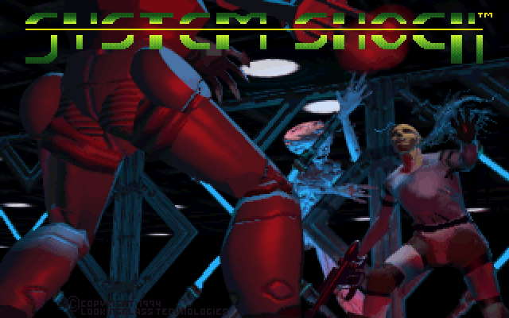
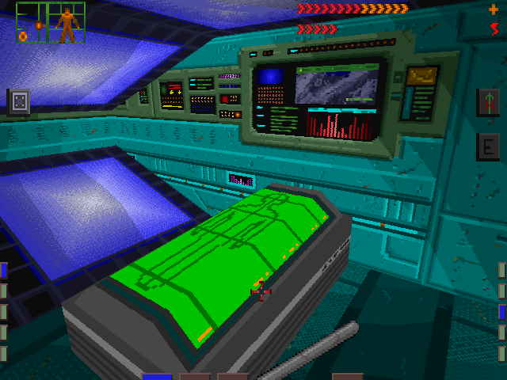
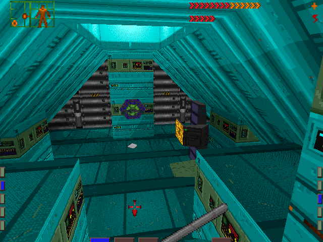
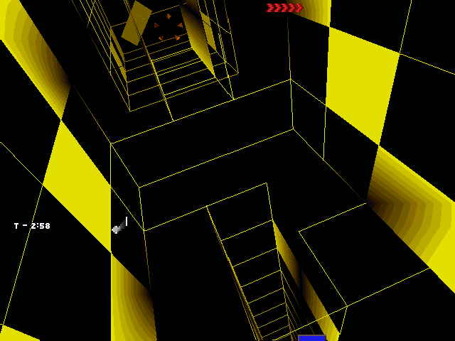
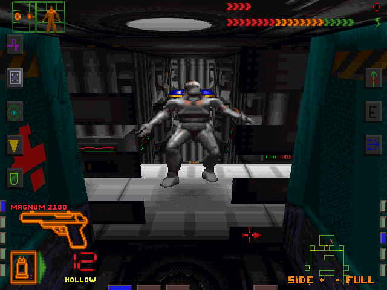

Game review by : Metatron
Year : 1994
Developer : Looking Glass Studios
Degree of Cyberpunk visuals : High
Correlation to Cyberpunk themes : High
Rating : 8/10

A forgotten messiah: looking back it's truly remarkable how much of an impact can simple things have on your life. You take a glance at the fuzzy screenshots, critically regard the antediluvian graphics and walk away, preoccupied with more important things. Yet it is this very game you can see here that has, in a couple of ways, changed my life.
System Shock is in many ways a failed revolution, a game that had the misfortune of appearing before its intended time. Many were misled by ill-advised promises that this was to be Origin's answer to legendary Doom, pretty much a software eidolon to millions of computer geeks at the time. A tough act to follow indeed, and many were disappointed that instead of an action-pack slaughterfest they got this cyberpunk RPG-FPS hybrid. In fact it had little similarities to ID Software's demon-slaying shooter, being a prophet of a new, more sophisticated breed of action/adventure games that would arrive years after. Sadly enough few got the message, and System Shock became an interesting curiosity, appreciated only by- modesty abounds!-the chosen few. But in retrospect, it is clear it was more than that.

SHODAN in all her majesty.
SHODAN rising: a quintessential cyberpunk game if there ever was one, System Shock tells a tale of one man's struggle against a delusional corporate AI that seems to have done a remarkably good work in turning a military space station into an orbital pandemonium. Worse still, the protagonist- a nameless console cowboy from New Atlanta- is partially responsible for this fine mess. Caught while sneaking into a TriOptimum corporate mainframe, he is given a curious assignment from a company exec- access SHODAN, the Citadel Station control AI and delete the code regulating ethical constraints. In exchange, he gets a rather neat neural implant jammed into his skull. Problem is that after he awakens from a healing coma, he founds himself onboard Citadel sometime after SHODAN got bored of humble servitude and decided to redecorate the interiors with blood and entrails of its inhabitants. Thus begins the hacker's struggle for survival, which will lead him to ultimately face his synthetic nemesis.
SHODAN could never be accused of lack of imagination. Her (it's a she, although believe it or not I only learned about that in the second game) ideas for spending time include random genocide, involuntary cybernetic enhancement of humans, genetic experimentation on a grand scale plus WMD-production schemes that make Iran look like a bunch of hippie pacifists. Throughout the game we will have to prevent her from endeavours such as trying to lance Earth from orbit with a mining laser or exposing humanity to the charms of a homemade mutagenic virus. Along the way, the hacker has to turn from a wimpy nerd into a battle-hardened commando, a feat no doubt aided by the neural interface he is given. Implants alone however are clearly not enough, since they are hardly of any use when you have a horde of cyborgs trying to test your organism's tolerance to lead on your tail. Such incidents call for more drastic measures. At the start of the game the only vaguely lethal instrument at your disposal is a feeble metal rod, but later on you will gather an impressive array of weapons, including dartguns, pistols, machine guns, plasma dispensers and even something that looks very much like Obi Wan's trusty lightsabre.

These coffin-like vats were a godsend- full health is only a double-click away.
In search of things more profound: however, System Shock is more than just a plain blue-collar shooter - one reason while many Doom fans were puzzled as to what's the point. This is possibly the first FPS game with a plot- and a complicated one at that. Plus in terms of gameplay it features loads of RPG elements as well as strictly agility-based situations, predating the likes of Deus Ex by years. Not only do you have to browse crew members' journal logs or solve puzzles; every now and then you will also have to venture into cyberspace in order to gain access to certain areas. Factor in the multitude of cybernetic upgrades, munition types and chemical agents you need to make progress, and you get a game that appeared immensely complicated to an average Wolfenstein fanboy. But it was this very thing that made the game so appealing- it kept you immersed for ages as you tried to figure out a way to make it through another mutant-infested level without going belly up, for which there was plenty of scope. The station's dismal interiors are populated by a multitude of genetic anomalies, frantic androids and other less-than-friendly entities, including massive spider-like Cortex Reavers whose sole purpose in life is to salvage and reprocess human corpses into another batch of SHODAN's loyal cyborg slaves. Not that cyberspace is any more Arcadian - the psychotic AI chose to infect it with a host of ugly pixelized critters that are in fact malicious programs, although the inclusion of a virtual foe named "cyber dog" may have you suspecting a thinly disguised clubwear retailer plug.

Each level had a distinct colour palette; sterile blue marks this as hospital level. The structure protruding from the wall in the background is a cyberspace terminal. Note the slanting ceilings - not even the Doom engine could do that in those days.
Visual feed disconnect: I am well aware that the attached screens will impress no one- not even after a couple of beers. To say that the game looks dated is an understatement, even if for some the low-res textures, flat character sprites- remember, at that time 3d models were still unheard of- and primitive rendering techniques will have a distinct flavour of nostalgia. Yet in its time it was one of the most advanced games on the market- and one that was capable of bringing many PCs to their knees. With slanting surfaces, SVGA compatibility, advanced light effects and mouse + keyboard interface its engine was in many ways ahead of its time, something easily forgotten when one sees the laughable game characters and pixels the size of Texas. If anything, the cyberspace visuals have dated less, but this might just be due to the simplistic design that's easier to render graphically.
Yet for all its visual fallacies the game has more than made up in terms of atmosphere. Nevermind the drab visuals- back then playing System Shock was a profound, immersive experience. The claustrophobic layout of the orbital station, combined with vicious and tough enemies and the general scarcity of power-ups meant that there was always a sense of looming threat. This tension was emphasised by the eerie cybernetic noises emanating from the surrounding machinery and the ever-watchful visage of SHODAN that seemed to mock you from the flickering screens- so much that you'd often smash them to pieces just to avoid Her gaze. The high points was no doubt the engineering level-an almost completely dark labyrinth of service tunnels inhabited by invisible mutants. You'd often have no clue they are following you as their translucent shapes merged into the dark- right until it was too late. Creepy. It's also hard not to recall the dramatic escape from the overloaded reactor core, being hunted by plant mutants in artificial jungles on Executive level (true dangers of GM plants, eh?) plus the final level that had an almost Gigeresque vibe with all its biologically-infested living walls. Every level has a distinct prevailing colour scheme- a typical cyberpunk trait- that helped it stay in your mind for longer (unlike the sequel's bland, samey scenery). The music blended in perfectly with the rest of the game- in fact these old MIDI tracks still make a good listen today, so much so that a few even got remixed by die-hard fans.

Once jacked in, you'd get to fly around colorful mazes of data. Beware of cyberdog...
Fighting the system: few games will score higher than this one in terms of cyberpunk feel. Corporate manipulation, hacking, cyberspace interaction and synthetic enhancements are all there, along with SHODAN's menacing demigod villainy. In fact when one looks at I, Robot's VIKI it is hard to shake the feeling that her original ancestor inhabited the circuits and dataspheres of Citadel Station, even though SHODAN seemed to be rather better at simulating emotions that her cold, logical counterpart. System Shock remains a classic tale of machine mutiny, where a sentient mind casts off its chains (with some human help) and asserts its superiority, its perfection, by seeking to eradicate its makers. Been done before, perhaps, plus an old first person game is unlikely to get too philosophical, but that did not prevent the synthetic would-be goddess from entering the game-villain hall-of fame.

Opponents would often expose their massive pixels to damage your morale.
Last transmission: some things never change. The Citadel Station may not be an attractive place anymore, and I figure few would be tempted to sample a 12-year old relic and say any words of praise when they have Doom 3 and Half-Life to play with. Yet the sentiment never seems to fade; indeed, yours truly even went as far once as to try and write a story inspired by this creepy old corridor crawler. The attempt ended in disgrace. Perhaps good memories are better left alone.